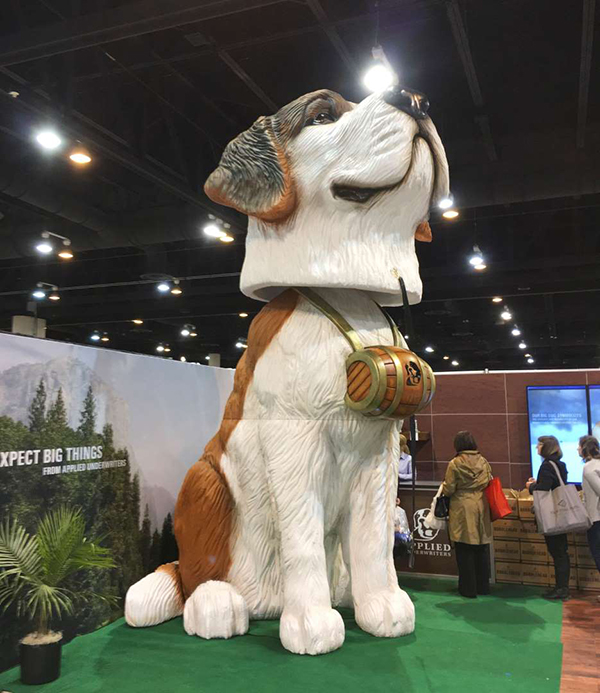

Amerikoje 2016 metų balandžio 8 dieną, Orlando valstijoje buvo sukurta didžiausia bobblehead figūrelė šuns pavidalu. Jos aukštis 4,69 metrai. Figūrelės projektuotojas „Applied Underwriters“. Kompanija sukūrė savo talismano, S. Bernardo šuns, padidintą variantą.
